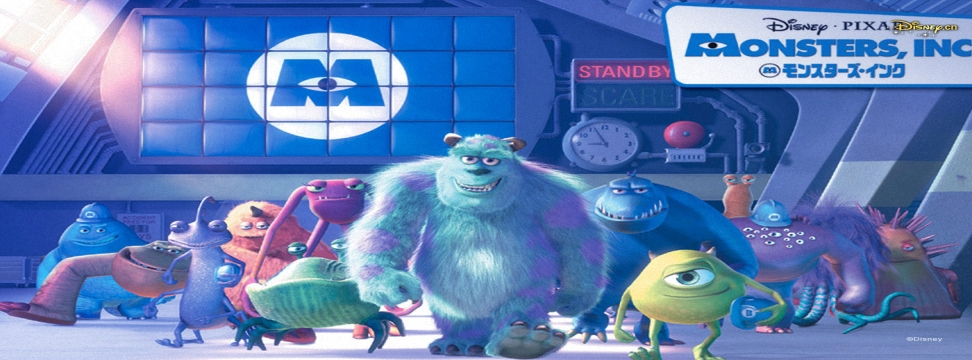

怪獸電力公司(Monsters, Inc.)
2001年11月2日

【片長時間】 約９２分鐘
【作品類別】 迪士尼/皮克斯動畫，長篇劇情動畫片
【原著取材】 原創故事
【內容介紹】繼【玩具總動員】、【蟲蟲危機】、【玩具總動員２】之後，迪士尼與ＰＩＸＡＲ公司再度合作推出第四部電腦動畫作品。
劇情敘述有一個與人類世界並存的怪物世界，當人類父母不在的時候，他們就會從衣櫥的門溜進來嚇小孩，因為人類小孩的驚叫和恐懼，正是維繫此一怪物世界運作的能量來源，“怪獸電力公司”正是製造怪物能量的大工廠。但是隨著時代愈來愈進步，新世代的小朋友也愈來愈不容易被嚇到，怪物的世界因此面臨到嚴重的〝能源危機〞。
在“怪獸電力公司”裡，有一隻名為 Mike 的單眼綠怪物和他的好友長毛怪 Sulley 是績效最好的拍檔，但有一次 Sulley 意外把一位人類小女孩 Boo 帶進怪物的世界，由於人類小孩被怪獸界認為是有毒的，足以毀滅怪獸世界，因此怪獸們發現居然有人類小孩闖進他們的世界，便引起了一陣恐慌，緊急總動員要消弭危險，但是 Mike 和 Sulley 這兩隻怪物後來發現其實小女孩 Boo 是無害的，於是他們盡一切力量要保護她，並護送她回家。本片在美國上映成績十分漂亮，１０天就突破一億大關，一個月後又突破兩億，可說是為美國遭遇９１１空襲事件後慘澹的電影票房打下一劑超級強心針！